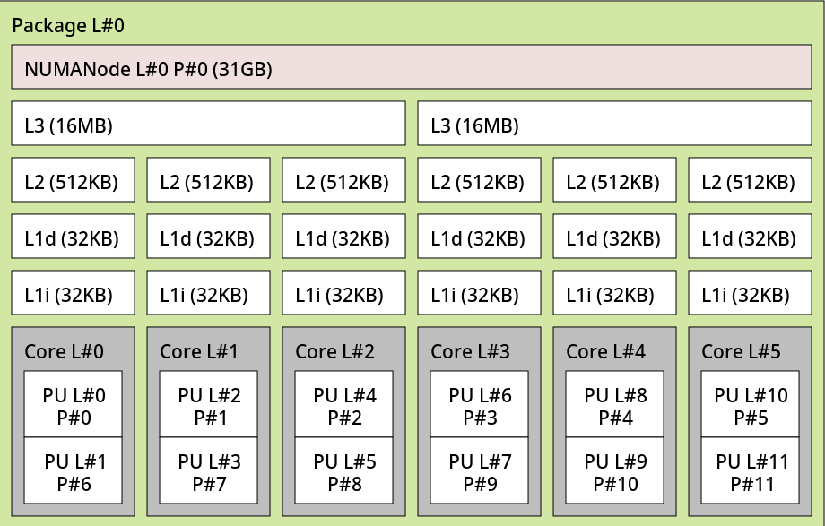

Cpu pinning and isolation
Cpu pinning lets the virtual machine to run only on specified vcpus. You can combine this with cpu core isolation to achieve maximum performance.
Use lstopo to reference the cpu topology
This is the output for AMD Ryzen™ 5 3600 From that we can link each core to its vcpus This cpu has 6 cpus and 2 threads per cpu, that makes for 12 vcpus:
| CORE | VCPU 1 | VCPU 2 |
|---|---|---|
| CORE 0 | 0 | 6 |
| CORE 1 | 1 | 7 |
| CORE 2 | 2 | 8 |
| CORE 3 | 3 | 9 |
| CORE 4 | 4 | 10 |
| CORE 5 | 5 | 11 |
Now you have to decide which and how many core to reserve for the host and how many for the guest.
For this setup we will use core 0,1,2,3 for the guest vm and leave core 4 and 5 for the host.
Get the vcpus
From the topology of the cpu we can now find out the vcpus we need for the guest and the host.
For the guest 0,6,1,7,2,8,3,9 vpus or 0-3,6-9
For the host 4,10,5,11 vcpus or 4-5,10-11
Dynamic cpu isolation
To isolate the vcpus at runtime we need to create a libvirt hook
Create a script named /etc/libvirt/hooks/qemu.d/isolate-cpus.sh
Paste the following script after editing the reserved and cores variables
The reserved variable refers to the host vcpus, so for my case 4-5,10-11
The cores variable must have the whole range of vcpus of the system 0-11
#!/bin/bash
# Cores reserved for the host machine
# Must include QEMU IO/Emulation cores if configured
# Ex: 1st Core -> reserved=0
# Ex: 1st & 2nt Cores -> reserved=0,1
# Ex: 1st Physical Core (16 Virtual Cores) -> reserved=0,8
reserved=4-5,10-11
# Host core range numbered from 0 to core count - 1
# You must put all the cores of your host CPU
# Cores not in $cores_for_host are for Guests
# Ex: 8 Cores -> cores=0-7
# Ex: 16 Cores -> cores=0-15
cores=0-11
# See Arch wiki for more informations https://wiki.archlinux.org/title/PCI_passthrough_via_OVMF#Isolating_pinned_CPUs
command=$2
valid_cmds='prepare,start,started,stopped,release,migrate,restore'
if [[ $command == "started" ]]; then
echo "Hook/Qemu : isolate-cpus.sh : Isolate CPUS"
systemctl set-property --runtime -- system.slice AllowedCPUs=$reserved
systemctl set-property --runtime -- user.slice AllowedCPUs=$reserved
systemctl set-property --runtime -- init.slice AllowedCPUs=$reserved
elif [[ $command == "release" ]]; then
echo "Hook/Qemu : isolate-cpus.sh : Allow all CPUS"
systemctl set-property --runtime -- system.slice AllowedCPUs=$cores
systemctl set-property --runtime -- user.slice AllowedCPUs=$cores
systemctl set-property --runtime -- init.slice AllowedCPUs=$cores
elif [[ $valid_cmds =~ $command ]]; then
echo "Hook/Qemu : isolate-cpus.sh : Supported command but do nothing"
else
echo "Invalid commands. Ex: ./script vm_name [prepare|start|started|stopped|release|migrate|restore]" >&2
exit 1
fi
With this method libvirt will isolate the cpus when the vm starts and return them to the host when the vm stops
Static cpu isolation
This method is more straight forward but the host will always ignore the cpus reserved for the guest
Edit the /etc/default/grub file and add to the GRUB_CMDLINE_LINUX_DEFAULT parameter:
- isolcpus=0-3,6-9
- nohz_full=0-3,6-9
- rcu_nocbs=0-3,6-9
Apply grub configuration